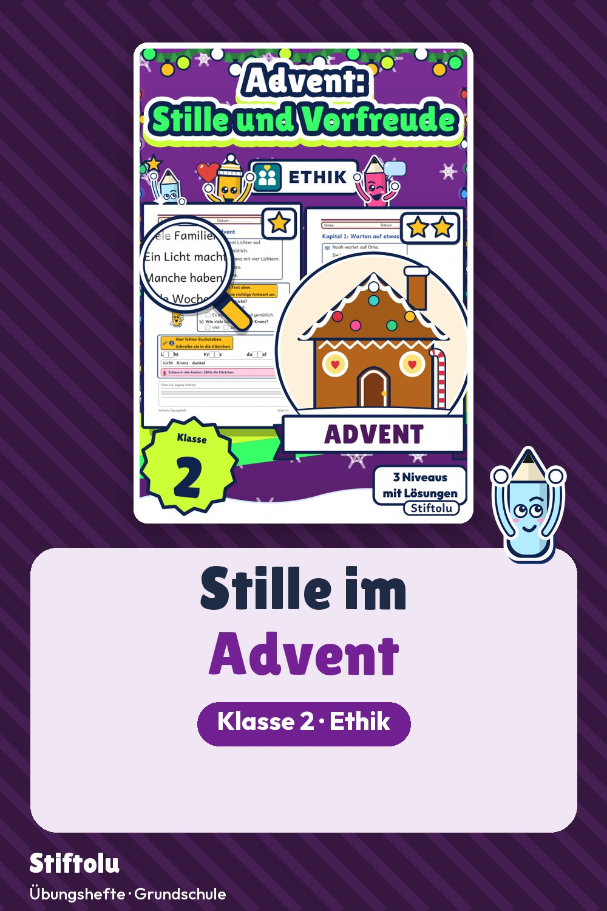

Werbung · Übungsheft von Stiftolu
Stille im Advent – Ruhe-Momente und Lichter für den Ethikunterricht in Klasse 2

Gesprächs-, Mal- und Schreibaufgaben führen durch die Adventszeit als Zeit der Stille. Zweitklässler sammeln Ruhe-Ideen, begründen ihren Ruheplan und teilen ihre Vorfreude mit anderen. Beispiel-Antworten stehen im Lösungsteil. Wer das Thema im Stuhlkreis beginnen möchte, findet die 48 Seiten erhältlich auf eduki.